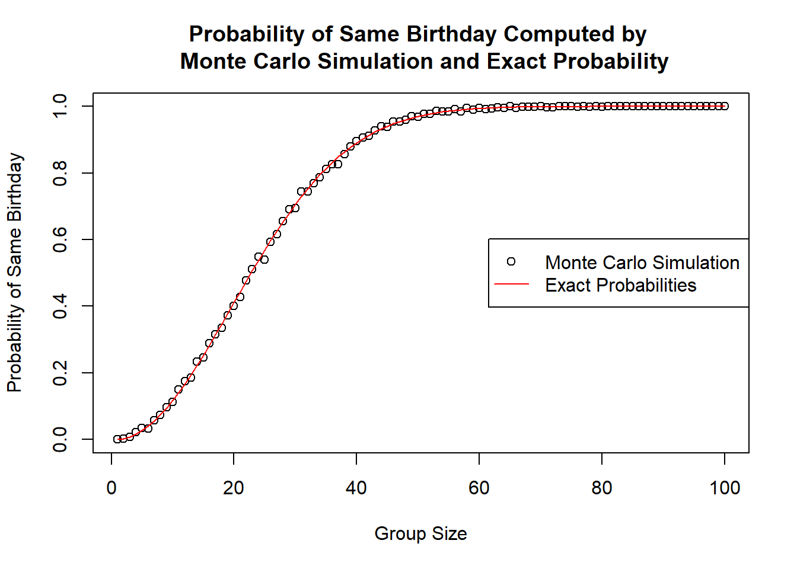
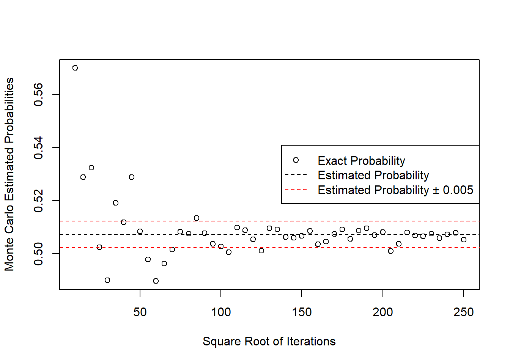
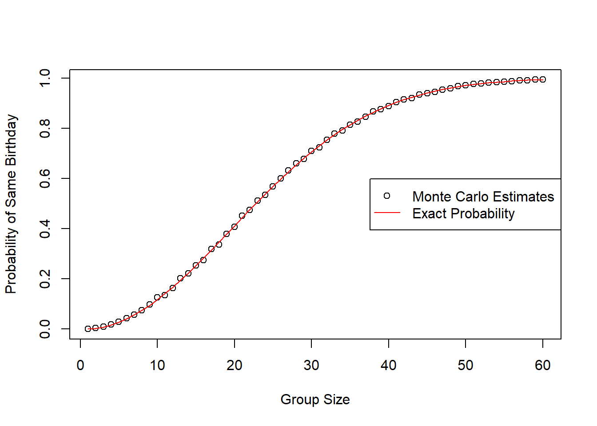
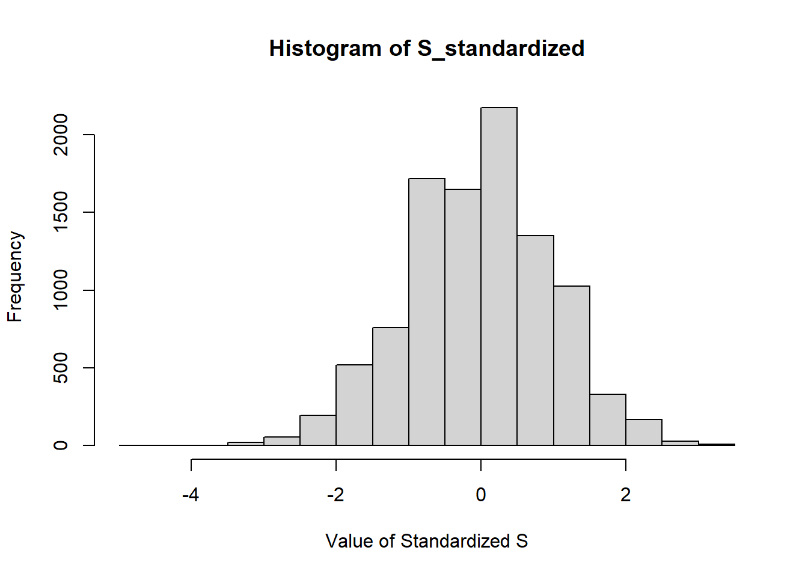
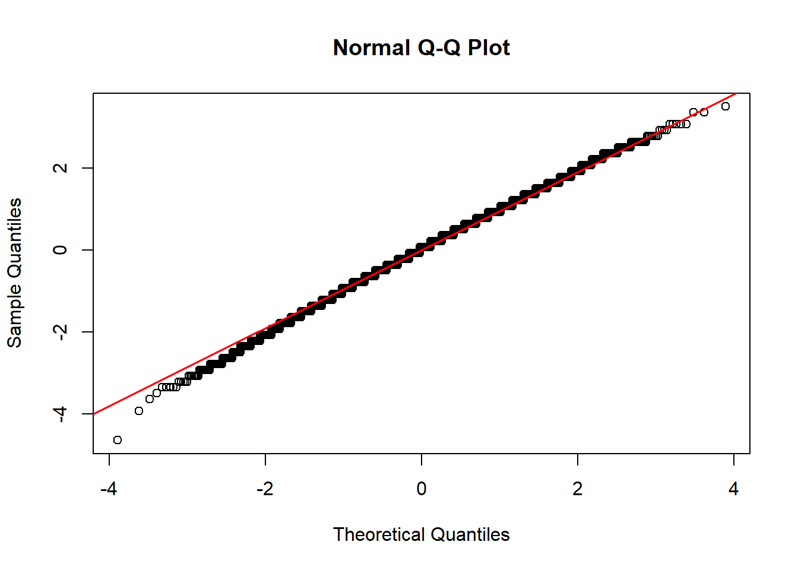

same_birthday <- function(n){
birthday <- sample(1:365, size = n, replace = TRUE)
return(any(duplicated(birthday)))
} Problem set 5
Please answer each of the exercises below. For those asking for a mathematical calculation please use LaTeX to show your work. Each problem is worth 1 point, for a total of 16 points.
Important: Make sure that your document renders in less than 5 minutes.
- Write a function called
same_birthdaythat takes a numbernas an argument, randomly generatesnbirthdays and returnsTRUEif two or more birthdays are the same. You can assume nobody is born on February 29.
Hint: use the functions sample, duplicated, and any.
- Suppose you are in a classroom with 50 people. If we assume this is a randomly selected group of 50 people, what is the chance that at least two people have the same birthday? Use a Monte Carlo simulation with $B=$1,000 trials based on the function
same_birthdayfrom the previous exercises.
set.seed(2025)
B <- 10^3
## Your code here
simulations_N_50 <- replicate(B,same_birthday(50))
prob_same_birth <- mean(simulations_N_50)
print(prob_same_birth)[1] 0.972- Redo the previous exercises for several values on
nto determine at what group size do the chances become greater than 50%. Set the seed at 1997.
set.seed(1997)
compute_prob <- function(n, B = 10^3){
## Your code here
simulations_n <- replicate(B, same_birthday(n))
mean(simulations_n)
}
## Your code here
numbers <- 1:100
probs_same_birth <- sapply(numbers, compute_prob)
group_size_chances_50 <- min(numbers[which(probs_same_birth > 0.5)])
print(group_size_chances_50)[1] 23The group size where the chance becomes greater than 50% is: 23
- These probabilities can be computed exactly instead of relying on Monte Carlo approximations. We use the multiplication rule:
\[ \mbox{Pr}(n\mbox{ different birthdays}) = 1 \times \frac{364}{365}\times\frac{363}{365} \dots \frac{365-n + 1}{365} \]
Plot the probabilities you obtained using Monte Carlo as a points and the exact probabilities with a red line.
Hint: use the function prod to compute the exact probabilities.
exact_prob <- function(n){
## Your code here
return(1 - prod((365 - 0:(n-1)) / 365))
}
## Your code here
exact_probs <- sapply(numbers, exact_prob)
plot(numbers, probs_same_birth, xlab = "Group Size", ylab = "Probability of Same Birthday", main = "Probability of Same Birthday Computed by \n Monte Carlo Simulation and Exact Probability")
lines(numbers, exact_probs, col = "red")
legend("right", legend = c("Monte Carlo Simulation", "Exact Probabilities"), col = c("black","red"),pch = c(1, NA), lty = c(NA,1))
- Note that the points don’t quite match the red line. This is because our Monte Carlos simulation was based on only 1,000 iterations. Repeat exercise 2 but for
n = 23and tryB <- seq(10, 250, 5)^2number iterations. Plot the estimated probability againstsqrt(b). Add horizontal lines around the exact probability \(\pm\) 0.005. Note this could take several seconds to run. Set the seed to 1998.
set.seed(1998)
B <- seq(10, 250, 5)^2
## Your code here
pm <- 0.005
exact_prob_23 <- exact_prob(23)
ub <- exact_prob_23 + pm
lb <- exact_prob_23 - pm
Monte_Carlos_estimated <- sapply(B, function(B) compute_prob(23,B))
plot(sqrt(B), Monte_Carlos_estimated, xlab = "Square Root of Iterations", ylab = "Monte Carlo Estimated Probabilities")
abline(h = exact_prob_23, lty = 2)
abline(h = ub, col = "red", lty = 2)
abline(h = lb, col = "red" ,lty = 2)
legend("right", legend = c("Exact Probability","Estimated Probability", "Estimated Probability ± 0.005"), col = c("black","black","red"), pch = c(1,NA,NA), lty = c(NA, 2, 2))
Describe when it starts to stabilize in that the estimates are within 0.005 for the exact probability.
The Monte Carlo Simulation estimates starts to stabilize within 0.005 for the exact probability when the square root of iterations is around 100, which is 10,000 iterations.
- Repeat exercise 4 but use the results of exercise 5 to select the number of iterations so that the points practically fall on the red curve.
Hint: If the number of iterations you chose is too large, you will achieve the correct plot but your document might not render in less than five minutes.
n <- seq(1,60)
## Your code here
Num_iterations <- 10000
MonteCarlos_estimates <- sapply(n, function(n) compute_prob(n,Num_iterations))
exact_probs_10000 <- sapply(n, exact_prob)
plot(n, MonteCarlos_estimates, xlab = "Group Size", ylab = "Probability of Same Birthday")
lines(n, exact_probs_10000, col = "red")
legend("right", legend = c("Monte Carlo Estimates", "Exact Probability"), col = c("black", "red"), pch = c(1,NA), lty = c(NA,1))
7a. In American Roulette, with 18 red slots, 18 black slots, and 2 green slots (0 and 00), what is the probability of landing on a green slot?
\[ \mbox{Pr}(\mbox{landing on a green slot}) = \frac{2}{18+18+2} = \frac{2}{38}=\frac{1}{19} \]
7b. The payout for winning on green is $17 dollars. This means that if you bet a dollar and it lands on green, you get $17. If it lands on red or black you lose your dollar. Create a sampling model using sample to simulate the random variable \(X\) for the Casino’s winnings when one person bets on green.
n <- 1
## Your code here
result <- c(1, -17)
probability <- c(18/19, 1/19)
winnings <- sample(result, n, replace = TRUE, prob = probability)
print(winnings)[1] 1- Now create a random variable \(S\) of the Casino’s total winnings if $n = $1,000 people bet on green. Use Monte Carlo simulation to estimate the probability that the Casino loses money.
set.seed(2025)
n <- 1000
## Your code here
Num_trials <- 10000
Monte_Carlo_Simulation_casino <- replicate(Num_trials, sum(sample(result, n, replace = TRUE, prob = probability)))
Probability_Casino_lose <- mean(Monte_Carlo_Simulation_casino < 0)
print(Probability_Casino_lose)[1] 0.3338- What is the expected value of \(X\)?
\[ \mathbb{E}[X] = 1 \times \frac{18}{19} + (-17) \times \frac{1}{19} = \frac{1}{19} \approx 0.05263 \]
- What is the standard error of \(X\)?
\[ \sigma_{X} = \sqrt{\mbox{Var}(X)} = \sqrt{\mathbb{E}[X^2] - (\mathbb{E}[X])^2} = \sqrt{(1^2 \times \frac{18}{19} + (-17)^2 \times \frac{1}{19}) - (\frac{1}{19})^2} = \sqrt{\frac{5832}{361}}\\ \approx 4.0193 \]
- What is the expected value of \(S\)? Does the Monte Carlo simulation confirm this?
\[ \mathbb{E}[S] = \mathbb{E}[n \cdot X] = n\mathbb{E}[X]=1000 \times \frac{1}{19} \approx 52.63 \]
## Your code here
S <- replicate(Num_trials, sum(sample(result, n, replace = TRUE, prob = probability)))
Expected_S <- mean(S)
print(Expected_S)[1] 55.3132The expected value of S calculated from Monte Carlo simulation is $55.3132 dollars, which is near to the expected value calculated mathematically. The difference may because of a small group size (n = 1,000) and number of trials (N = 10000)
- What is the standard error of \(S\)? Does the Monte Carlos simulation confirm this?
\[ \mbox{SE}(S) = \sqrt{n}\cdot \mbox{SE}(X) = \sqrt{1000} \times \frac{\sqrt{5832}}{19} \approx 127.1028 \]
## Your code here
SE_S <- sd(S)
print(SE_S)[1] 126.1609The standard error (SE) of S in the Monte Carlos simulation is close to the mathematical calculated SE value of S. If we increase the number of trials in the Monte Carlos simulation, the result may be more closer to the theoretical value.
- Use data visualization to convince yourself that the distribution of \(S\) is approximately normal. Make a histogram and a QQ-plot of standardized values of \(S\). The QQ-plot should be on the identity line.
## Your code here
S_standardized <- (S - mean(S)) / sd(S)
hist(S_standardized,xlab = "Value of Standardized S")
qqnorm(S_standardized)
qqline(S_standardized, col = "red", lty = 1, lwd = 1.5)
- Notice that the normal approximation is slightly off for the tails of the distribution. What would make this better? Increasing the number of people playing \(n\) or the number of Monte Carlo iterations \(B\)?
Answer here Increase the number of people playing \(n\) would be better, as now the distribution does now follow the normal distribution perfectly, increase \(n\) will improve normality.
- Now approximate the casino profit probability estimated using CLT. Does it agree with the Monte Carlo simulation?
\[ \mbox{Pr}(S > 0) =\mbox{Pr}(Z > \frac{0 - \mathbb{E}[S]}{SE(S)}) = \mbox{Pr}(Z > \frac{0 - 52.63}{127.1028}) =1 - \mbox{Pr}(Z < -0.4141) \approx 0.6606 \]
## Your code here
Casino_profit_probability <- mean(S > 0)
print(Casino_profit_probability)[1] 0.6733Answer here It agree with the Monte Carlo simulation, with the theoretical probability be about 66.06% and the simulation gives 67.33%. The probabilities are close.
- How many people \(n\) must bet on green for the Casino to reduce the probability of losing money to 1%. Check your answer with a Monte Carlo simulation.
\[ \mbox{Pr}(S < 0) = 0.01 \Rightarrow \mbox{Pr}(Z < \frac{0 - \mathbb{E}(S)}{SE(S)}) = 0.01 \Rightarrow \Phi(X) = 0.01 \Rightarrow X \approx -2.326\] \[ \Rightarrow \frac{0-\mathbb{E}(S)}{SE(S)} = -2.326 \Rightarrow \frac{-n\cdot \mathbb{E}(X)}{\sqrt{n}\cdot SE(X)} = -2.326 \Rightarrow \frac{-0.05236n}{4.0193\sqrt{n}} = -2.326 \Rightarrow \sqrt{n} \approx 178.5503 \Rightarrow n \approx 31880.1966 \]
## Your code here
Expected_X <- 1 * 18/19 + (-17) * 1/19
SE_X <- sqrt(1^2 * 18/19 + (-17)^2 * 1/19)
Z_score <- qnorm(0.01)
number_on_green <- ceiling(((abs(Z_score) * SE_X) / Expected_X)^2)
print(number_on_green)[1] 31568trials <- 10000
winnings <- replicate(trials, {
casino_lose <- rbinom(1, 31881, prob = 1/19)
31881 - 17 * casino_lose
})
probability_of_lose <- mean(winnings < 0)
print(probability_of_lose)[1] 0